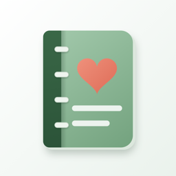
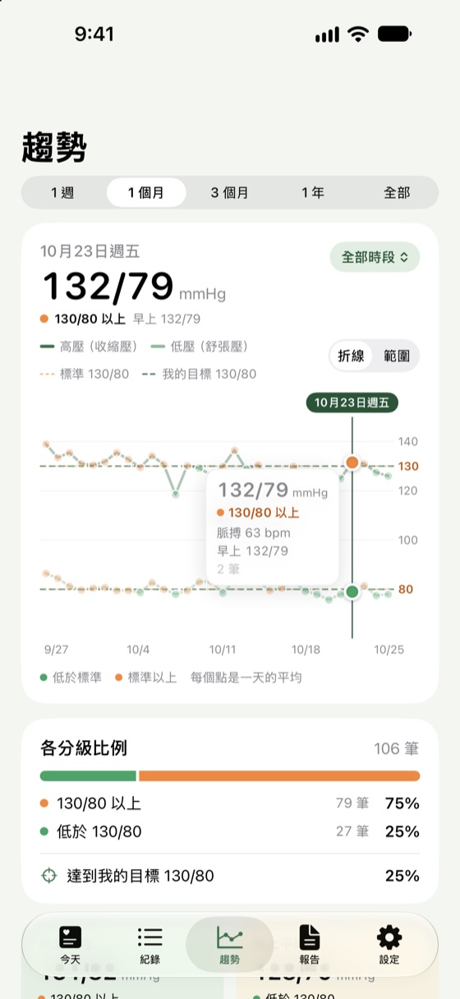
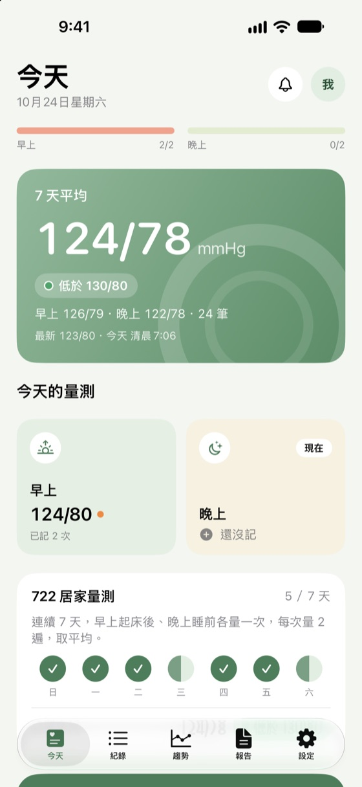
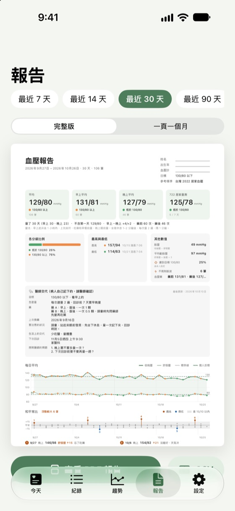

量完幾秒就記好
大字數字鍵盤，自動分早上、晚上；量第二次按「儲存並再量一次」，平均自動算好。也能直接跟 Siri 說。

量完血壓，幾秒就記好。早晚平均自動算好，回診時給醫師一份清楚的報告。
本 App 不會量血壓，請搭配你自己的血壓計使用。



為居家量血壓設計：數字大、步驟少，量完馬上記好。
大字數字鍵盤，自動分早上、晚上；量第二次按「儲存並再量一次」，平均自動算好。也能直接跟 Siri 說。
連續 7 天、早晚各量 2 次，App 幫你追進度，算出這段期間的平均。
平均、分級、最高最低、趨勢圖和每天的紀錄整理成 PDF，回診時直接給醫師看。
折線或範圍隨時切換，長按圖表看每一天；Pro 可以看一個月到一年。
血壓計存進「健康」的數值自動帶進來，你在這裡記的也會存回「健康」。
通知或鬧鐘任選，鬧鐘在靜音時也會響；當天那個時段記過了，就不再提醒。
每一種分級都附上出處，也可以設定醫師給你的目標線。
居家血壓 130/80 以上，調整生活並與醫師討論（2022 台灣高血壓治療指引）
家庭血壓 135/85 以上為高血壓（日本高血壓學會 JSH2019）
130/80 以上為第 1 期高血壓（ACC/AHA 2017，2025 年版沿用）
需要更多時再升級 Pro。更早的紀錄不會刪除，CSV 匯出與備份永遠包含全部紀錄。
不會。iPhone 沒辦法量血壓，請用你自己的血壓計量，再把數字記到本 App；或讓血壓計的 App 把數值存進「健康」，本 App 會自動帶進來。
先在血壓計自己的 App 開啟寫入「健康」，再到本 App「設定」>「Apple 健康」連接。之後存進「健康」的血壓會自動出現在本 App。
可以。對 Siri 說「用血壓紀錄簿記錄血壓」，Siri 會問收縮壓和舒張壓，存好後唸出分級；量到 180/120 以上，會唸出該怎麼做。要先解鎖 iPhone 才能新增紀錄。「捷徑」App 裡也有「記錄血壓」動作。
本 App 依你所在國家的公開指引分級，可以在「設定」>「標準」更換。醫師會依你的整體狀況給你目標，請以醫師的建議為準；你也可以在 App 裡設定醫師給你的目標線。
用 iCloud 備份或電腦備份移轉 iPhone 時，資料會一起過去。也可以在「設定」>「匯出與備份」>「匯出備份檔」，再到新手機用「從備份檔還原」。
鬧鐘提醒需要 iOS 26.1 以上，並在 iPhone「設定」> 血壓紀錄簿 允許排程鬧鐘；不允許時會改用通知。當天那個時段已經記過，就不會再提醒。
取消：iPhone「設定」>（你的名字）>「訂閱項目」。換手機或重新安裝之後，到 Pro 畫面按「恢復購買」。
不會，資料只存在你的 iPhone 上。詳見隱私權政策。
通常幾天內會回覆。請附上 iPhone 型號和 iOS 版本；不需要附上你的血壓紀錄。
本 App 用來記錄，不是醫療器材，不提供診斷或治療。遇到緊急狀況，請立即撥打 119。